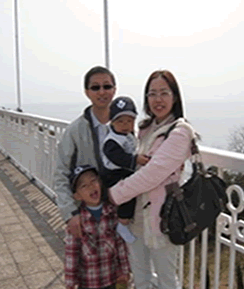

 |
| 人生格言：以能够和比自己聪明能干的人友好相处而自豪。 |
| |
沉稳干练的IT部李杰，带着对事业梦想的追求和对百年平台的信心，放下熟悉的工作、离开舒适的环境，不远万里，来到大连，加入百年创业队伍。
百年的IT最初只是一张白纸。但是在李杰的率领下，迅速搭建起公司的IT基础框架，建设了保险业务系统。他还充分利用自己多年海外工作的经验，为公司引进国际上先进的IT理念及IT技术。
IT部在李杰的带领下，秉持“IT的战略与公司的发展战略密切结合，以价值最大化为导向，把高效运营建设成公司的核心竞争力之一”的理念，积极主动为前线出谋划策，如建设梦想家园、动漫天地、短信平台等。为更好为客户提供服务，IT资源面向对客户的项目倾斜，比如建设外部网站，一保通服务等。
李杰不仅在IT技术方面发挥自己的专业特长，在日常的经营中，他也始终秉持为公司节约成本的理念，所购设备不求豪华，但求实用、稳定，从小型机，到网络设备到PC机，百年相对同业节约了几百万。
不畏浮云遮望眼，只缘身在最高层。相信在李杰的带领下,团结协作、追求卓越的IT部一定会为百年的业务发展提供越来越好的系统运营支持服务。 |
|
|